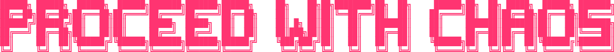

A COLLECTION OF CONTRADICTIONS THAT DEFINE REALITY
"There is infinite wisdom inside of paradox."
LIVE PARADOX STREAM
"The opposite of a profound truth may well be another profound truth."
PARADOX CATEGORIES
ALL PARADOXES
0 PARADOXES